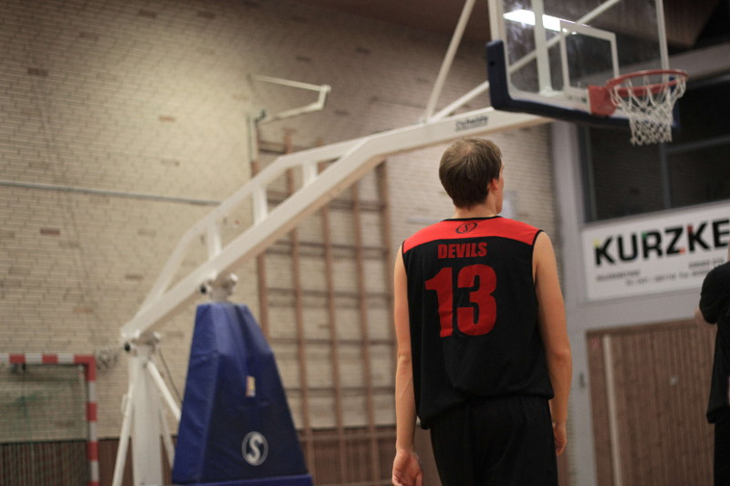
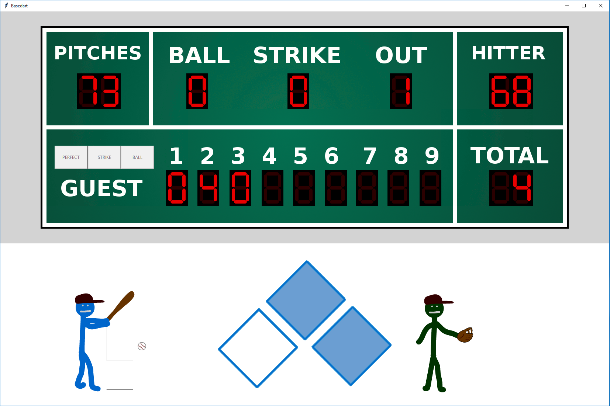

I completed my Bachelor in Computer Science at the University of Bremen in 2019, with a final grade of 1.62.
In the second half of my studies, where you get to pick your classes more freely,
I started to orient in the direction of machine learning und artificial
intelligence. I'm a very logic driven person, so I
like the idea of algorithms being able to perform
smart actions, even thought they're based on simple
logic.
As part of my studies all students have to work on a bachelor's project.
The project is being worked on for two semesters and is done by groups of around ten students.
My bachelor's project was called Arico Approximate Computing,
In the project one other student and I, were in charge of building arithmetic hardware with the capability to approximate the result,
in a trade off for shorter calculation time. We did this by adding instructions to a RISC-V processor that was run on an FPGA.
Basketball

Basketball is by far my most passionate hobby.
I started playing at the age of 16 and never stopped since.
I truly love the mix of hustle, individual skill and team performance.
Basically I love everything about this sport.
It is such a high pace, action
packed game, which makes it fun to watch, as well as
always leaving a window open for a comeback.
For me the high pace brings a completely different
aspect to the table – when playing you have to make
fast decisions and don't have time to
overthink. I find this refreshing, since
I'm usually the kind of person who always thinks about
everything a little to much.
I play and coach Basketball for the DTV Devils in
Delmenhorst. If you want to know more,
check out the team's website.
Bodyweight Training
I do a lot of body weight training to become a better Basketball-Player
and athlete. I truly believe that being a computer
scientist and athlete at the same time is a perfect
combination. Let me explain why.
When people think about a workout only think about the physical exhaustion of their body.
They don't think about the positive effect it has on you mentally, really pushing yourself to your limits will completely clear your head.
A long day at the office on the other hand is exhausting for you mentally, but most of the time not for your body.
So complementing an office day with a short bodyweight-workout, brings a great balance to your life,
as it will exhaust you physically and cleanse the mental exhaustion you have from work.
The great thing about bodyweight workouts is that they don't require a membership of any kind.
Everybody can do them at home, which means you don't waste any time going to the gym or coming back home.
It will only take the time you work out and you can find plenty of workouts online
that are done in 30 minutes or less. If you don't find anything, you can also just ask me.
I don't want to tell you how to live your life, but
I can't imagine my life without sports. Pushing myself to my limits and exhausting my
whole body completely is a great feeling for me, but
you should check it out for yourself. Like I said bodyweight
workouts don't require a membership and can be done anywhere,
so you don't have any excuses anyway.
BaseDart

BaseDart is a little pet project of mine. Essentially it is a simple Dart-Checkout-Training game, but to add a little twist the player represents the pitcher of a Baseball game.
In order to throw a good pitch in the game, the player needs to checkout a given score in a certain amount of darts in real life.
To fully appreciate the game some knowledge of baseball is required, however I also have basic version that might be more suitable to the average Darts-Player, as it is less confusing if you don't know anything about Baseball.
If you want to check it out you can find either version of the project on my GitHub here.
The game is implemented in python and I also used it to play around with some self drawn animations.
Basketball Coaching
I started coaching Basketball 2017 and I have been the head coach of the DTV Devils U16 since.
Sharing my Basketball knowledge and passion, is a great pleasure to me.
I have to admit that when I first started in 2017, the job was a lot more challenging than I thought.
That is why I got my official C-Breitensport Trainers License in 2018, which gave me a much better grasp
on how to structure my practices, to keep the kids interested and focused trough out the whole practice session.
I have to plan and run two practices a week, one of which is a mixed practice for the U14 and U16 team, which means that
I regularly have 20+ kids of many different skill levels and one assistant-coach in the gym.
Having a well structured practice plan is key to keep everything running smoothly and with a certain intensity.
A team sport like Basketball, teaches young kids so much more than the sport itself.
Not only do they learn how to work as a team, but also how to become a team in the first place. Playing as a
team requires a great deal of trust in your teammates, that has to be earned and given between each and every player.
They also learn that there are no shortcuts to success, the only way to get good at something is by putting in the work.
Lastly they need to take responsibility for themselves and each other, which is something most people are not good at.
It is much easier to point the finger at someone, than to admit that you messed up,
luckily if you admit your mistakes a good team will always be there to support you.
My goal as a coach is not to win games, but to develope young players the best way I can and my players know this.
One implication is that bad players who work hard, get more playing time than good players who always slack off and mess around.
Sadly most youth coaches are only about winning, which will only develope the stronger players and leave most of the team behind.
Google Summer of Code
Google Summer of Code is stipend that allows students to work on an open source project, for a 3 month period.
Personally I worked on the project
"KnowRob visualization in RobCoG"
from the Institute of Artificial Intelligence at the University of Bremen.
The goal and result of the project was to create a plugin for Unreal Engine 4
that has basic marker and trajectory visualization functions that are controlled from ROS
(Robot Operating System) and not the system Unreal Engine 4 is running on.
The resulting plugin DisplayTypes and can be found here.
Institute of Artificial Intelligence
The Institute of Artificial Intelligence is the university institute that had the biggest impact on my studies.
Not only did I take a number of courses they offered, I also worked for them as part of Google Summer of Code 2018 and
building on that experience I decided to also write my Bachelor-Thesis ("Translating Symbolic Environments to Game Engines") there.
The code written for the thesis is split among multiple repositories, all of which are linked in the main repository here.
Below is the abstract of my thesis:
The goal of the thesis is to provide robots with a dynamically spawn-able simulation space in
a game engine. This is achieved by parsing a symbolic representation of the environment into
the robot’s knowledge base. All the needed information is then collected from this knowledge
base and used to spawn the parsed environment in a modern physics-based game engine,
namely Unreal Engine 4. The spawned environment is an exact representation of the symbolic
environment, that was parsed to begin with. This is tested and proved to be true. Additionally
the environment is fully connected to the knowledge base of the robot, this is showcased by
a few exemplary calls a robot would need to make in an simulation context. This means that
this thesis successfully provides a dynamically spawn-able simulation space, by translating a
symbolic environment to a game engine.
This thesis is of most interest to anybody who wants to build on the fundamental work done
in this thesis and use the provided simulation space, or anybody that is interested in the field
of robot simulation capabilities.
Local Hack Day University Bremen
I'm proud to say that I was one of the organizers of
the MLH Local Hack Day at the University of Bremen.
The Local Hack Day is a international MLH event,
where all over the world small local 12h Hackathons
took place at the same time, one of which I
organized with three fellow students.
At a Hackathon like this you meet new people, learn new stuff
and simply use the great work atmosphere to work
on your own projects.
In our case one of the sponsors
(UBiMAX) brought
two Microsoft Hololenses to the event,
which was a cool experience since for many people there,
including myself, it was the first time trying out virtual reality.